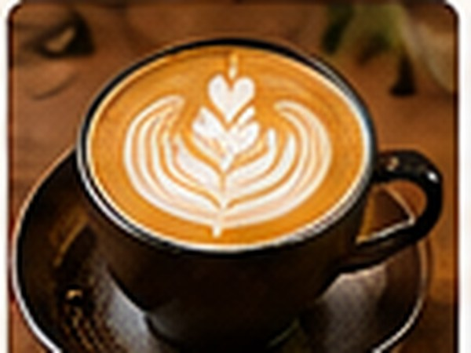
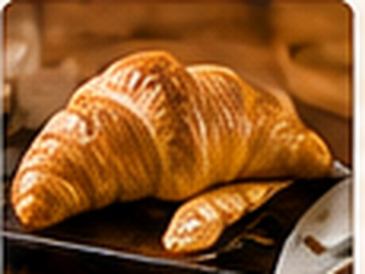
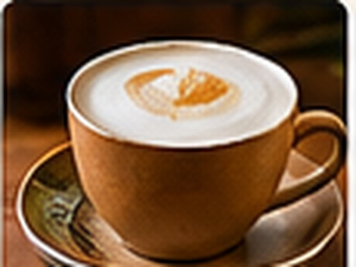
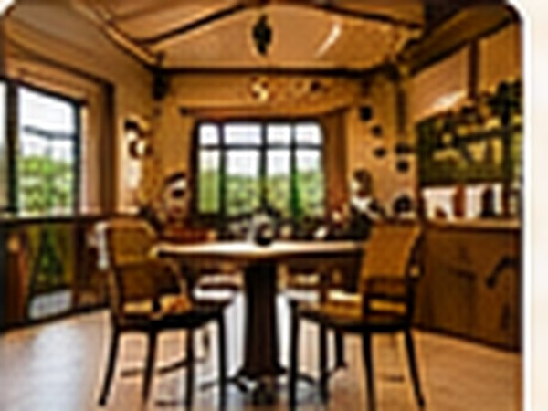
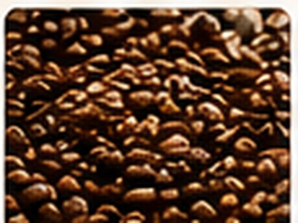
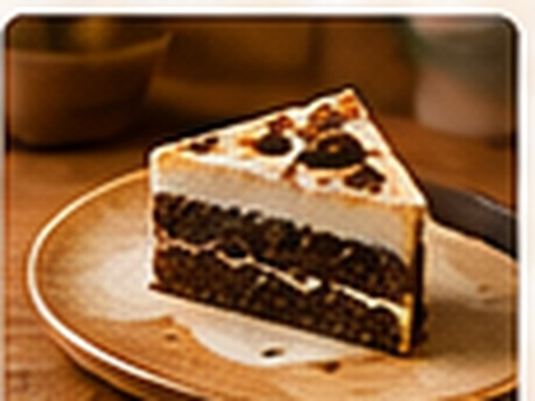
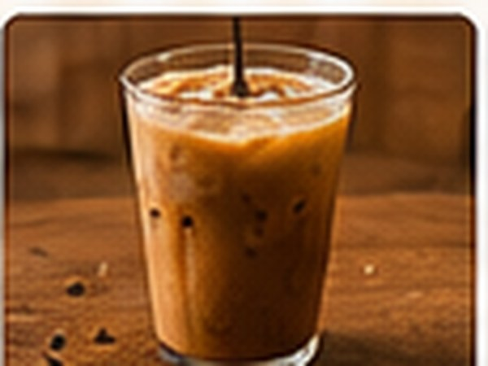
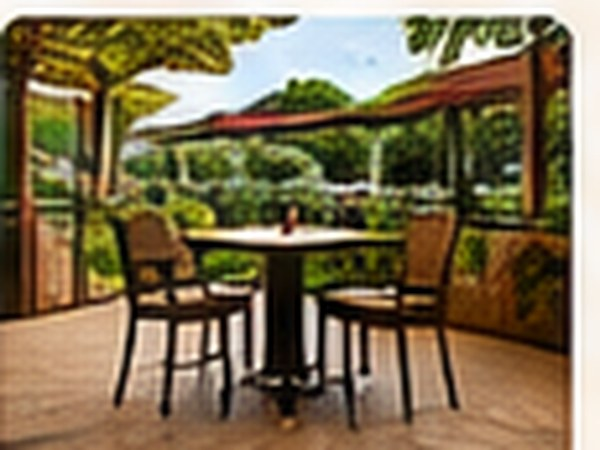

A glimpse inside
Little moments.
Lovely memories.
From the first espresso to the last bite, there's always something brewing.








A glimpse inside
From the first espresso to the last bite, there's always something brewing.







